Throughout the course, we will be using Python to programmatically access potentially vulnerable web sites. This assignment will introduce you to some of the basic packages and programming constructs for doing so.
For the lab, we will be asking you to document completion by taking screenshots of your output that include your OdinID (e.g. wuchang) somewhere within the image. You may do so via a Notepad application, a terminal screen, or within the window itself as shown below.
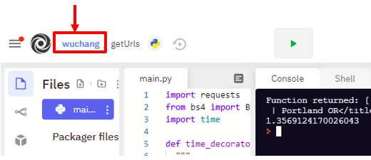
There are several options you may use for running the Python programs in this course.
If you prefer running within an integrated development environment, one option for running Python programs is through Visual Studio Code. Versions of VSCode are available for all modern operating systems (https://code.visualstudio.com/) and the Python interpreter can be installed from within it. Once installed, an integrated "Run" button is included that will automatically launch the Python interpreter in the Terminal window below which will show the output of the program.
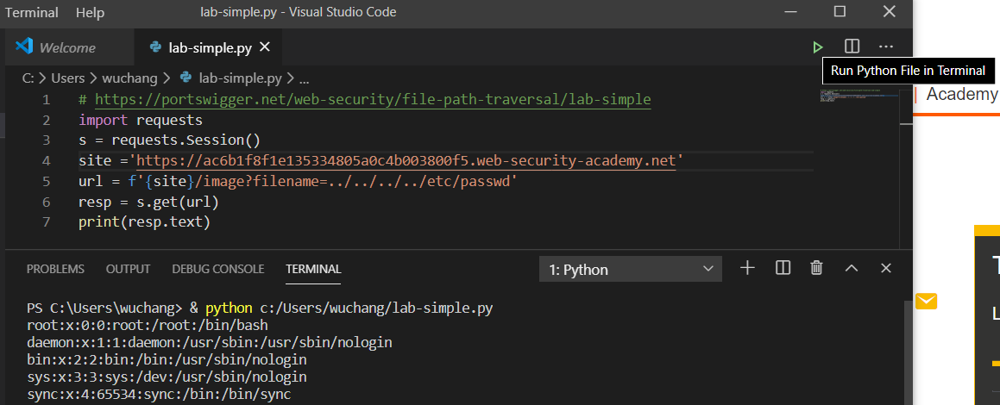
Note that if one uses a package that is not included by default in the Python interpreter you're using, you must install it in the Terminal window (e.g pip install requests bs4).
Alternatively, you can run Python scripts within a virtual environment in a Linux shell. The code used will require Python >= 3.8. This is installed by default on Ubuntu systems beyond 20.04. Perform the following in a directory you choose to work on this lab in:
sudo apt update -y
sudo apt install virtualenv python3-pip
virtualenv -p python3 env
source env/bin/activate
pip install requests bs4 httpxYou may then choose to run programs line-by-line in the interpreter by invoking it without arguments (e.g. python3):
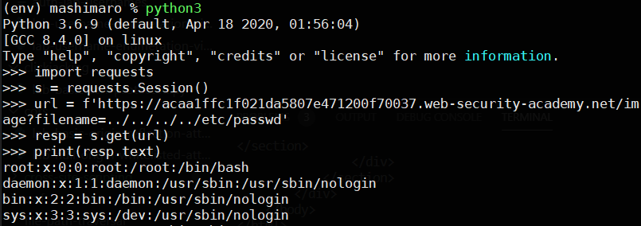
Or on a file containing your entire program (e.g. python3 lab-simple.py).
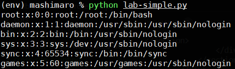
Perhaps the easiest, but maybe the slowest, way to run Python is via https://repl.it. Set up an account on repl.it (https://repl.it ) using your @pdx.edu e-mail address. Repl.it is an on-line programming language run-time hosted in the cloud. The site supports Python and manages Python packages that your program includes seamlessly, allowing you to focus on programming. Simply edit your code within its IDE and then click "Run". It will automatically install the appropriate packages (e.g. requests, BeautifulSoup, etc.) and provide you with an isolated container to execute your program in as shown below.
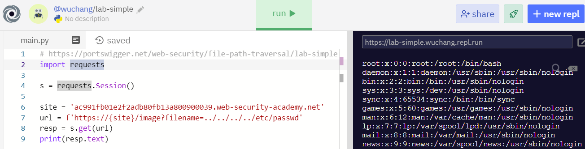
We will be using repl.it for the performance measurement part of this lab. Note that if the packages you use in your program are not automatically installed by the site, you may manually do so by visiting the command-line terminal and running the package installation command:
pip install requests bs4 httpxNote that the repl.it site assumes your program will be contained in "main.py". When the "Run" button is clicked, the site begins execution there.
Jupyter notebooks provide a browser-based development environment that allows one to interactively run Python code. You can visit https://jupyter.org/ for directions on how to set up a notebook either locally on your own machine or in a hosted environment on mybinder.org as shown below:
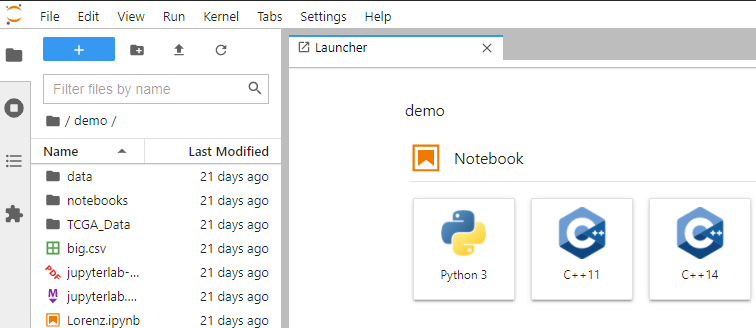
You may also use Google's Colab, a hosted service for running Juypter notebooks from Google Drive.
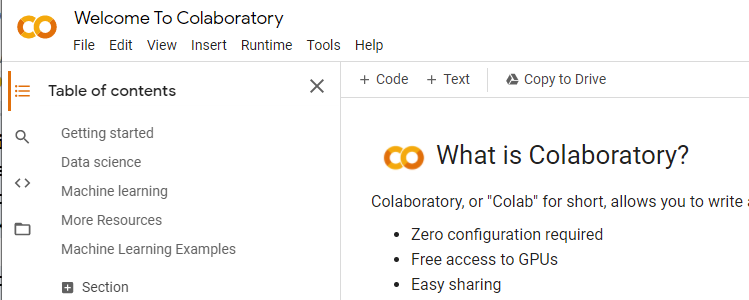
You will be writing a Python program that uses the requests package to download a set of URLs. An initial program is shown below. The program prints the output of the getSequential() function. getSequential() takes a list of URLs (urls) and calls the function getUrlTitle() on each. getUrlTitle() retrieves the given URL using the requests.get method, uses the BeautifulSoup package to parse the HTML response in order to create a searchable data structure from it (soup). From that, it calls the method find() using the parameter 'title' to return the HTML page's
import requests
from bs4 import BeautifulSoup
def getUrlTitle(url):
"""
This function returns the <title> of an HTML document given its URL
:param url: URL to retrieve
:type url: str
:return: Title of URL
:rtype: str
"""
resp = requests.get(url)
soup = BeautifulSoup(resp.text,'html.parser')
if soup.find('title'):
return(soup.find('title').text)
else:
return ('')
def getSequential(urls):
"""
Given a list of URLs, retrieve the title for each one using a single synchronous process
:param urls: List of URLs to retrieve
:type urls: list of str
:return: list of titles for each URL
:rtype: list of str
"""
titles = []
for u in urls:
titles.append(getUrlTitle(u))
return(titles)
urls = ['https://pdx.edu', 'https://oregonctf.org']
print(getSequential(urls))Run the program and ensure that you obtain the HTML titles for the pages listed similar to below:
% python getUrls.py ['Homepage | Portland State University', 'Oregon CTF']
A decorator in Python is commonly used to take a function as a parameter and return a modified version of it. We will be using a decorator to instrument several functions with timing measurements. The decorator is shown below. It takes the func as an argument and defines another function within itself called inner. The inner function records a time measurement (time.perf_counter), then calls the original function func, and prints the return values from it. It then takes another time measurement and prints out the elapsed time for the call before returning. time_decorator then returns this modified function.
import time
def time_decorator(func):
"""
Takes a function and returns a version of it that prints out the elapsed time for executing it
:param func: Function to decorate
:return: Function which outputs execution time
:rtype: Function
"""
def inner(*args, **kwargs):
s = time.perf_counter()
return_vals = func(*args, **kwargs)
elapsed = time.perf_counter() - s
print(f'Function returned: {return_vals}')
return(elapsed)
return(inner)We can apply this decorator to any function in our program by pre-pending @time_decorator to that function. For this program, augment the getSequential() function to time its execution:
@time_decorator
def getSequential(url):
...
...Then, modify the program to call the function on the two URLs. Since the decorated function returns timing information, the program stores the information and then prints it out using a formatted floating-point output of 2 decimal places.
urls = ['https://pdx.edu', 'https://oregonctf.org']
elapsedSequential = getSequential(urls)
print(f'{elapsedSequential:0.2f} secs')After modifying the program, re-run it. Ensure you get an output similar to below:
(env) % python getUrls.py Function returned: ['<title>Homepage | Portland State University</title>', '<title>Oregon CTF</title>'] 0.21 secs
When retrieving a set of URLs, the program waits to retrieve one URL before attempting to retrieve the next one. Unfortunately, this sequential pattern makes the program's execution slow. One way to perform this operation in parallel is to spawn multiple Python interpreter processes and have each one independently retrieve subsets of the URLs given. To demonstrate the speedup, augment the set of URLs in the program to include at least 10 unique URLs.
urls = ['https://pdx.edu', 'https://oregonctf.org', 'https://google.com', 'https://facebook.com', 'https://repl.it' ... ]Then examine the code for getMulti() below and add it to your program. The function takes in the set of URLs and the number of processes (num_processes) that should be used to retrieve them as parameters. It then creates a Pool of processes for the program to use. Finally, it invokes the map method on the pool to have the processes execute getUrlTitle() on each of the URLs in the list of URLs in parallel. The return values are then aggregated into a list and returned as with getSequential().
import multiprocessing
@time_decorator
def getMulti(urls, num_processes):
"""
Given a list of URLs, retrieve the title for each one using a single synchronous process
:param urls: List of URLs to retrieve
:type urls: list of str
:param num_processes: Number of processes to use
:type num_processes: int
:return: list of str
:rtype: list of str
"""
p = multiprocessing.Pool(num_processes)
titles = p.map(getUrlTitle, urls)
p.close()
return(titles)Modify your program to invoke getMulti() using 10, 5, and 2 processes. Note that when multiple processes are used, each one attempts to load the initial Python script. To prevent the repeated execution of getMulti() by each process we spawn, we include in our program a conditional guard to only allow a single execution, upon being directly called by the Python interpreter. The mechanism is described in the multiprocessing package documentation found here.
if __name__ == '__main__':
concurrencies = [10, 5, 2]
for c in concurrencies:
fetch_time = getMulti(urls,c)
print(f'{c} {fetch_time:0.2f}')Then, run the program to obtain an output similar to below showing that a speedup is obtained as the parallelism is increased. Note that parallelism may actually slow your program down if the machine does not have sufficient resources to run multiple interpreters efficiently.
% python getUrls.py Function returned: ['<title>Homepage | Portland State University</title>', '<title>Oregon CTF</title>' ... ] 2 2.55 Function returned: ['<title>Homepage | Portland State University</title>', '<title>Oregon CTF</title>' ... ] 5 1.10 Function returned: ['<title>Homepage | Portland State University</title>', '<title>Oregon CTF</title>' ... ] 10 1.37
Python is used prevalently in data science for its ability to both handle data processing tasks and visualize results. In order to visualize the impact that running multiple processes has on the performance of our program, we will modify it to plot its results using matplotlib, a commonly used plotting package. We will run the program on repl.it since it supports the rendering of matplotlib graphs within the browser.
Begin by examining the large list of URLs we wish to download at this link: https://thefengs.com/wuchang/courses/cs495/urls.txt . As the file shows, each line contains a single URL. The following snippet downloads these URLs and creates a list of URLs from the file.
resp = requests.get('https://thefengs.com/wuchang/courses/cs495/urls.txt')
urls = resp.text.strip().split('\n')concurrencies = [25, 20, 15, 10, 5, 2, 1]
elapsed = []
for c in concurrencies:
fetch_time = getMulti(urls,c)
elapsed.append(fetch_time)
print(f'{c} {fetch_time:0.2f}')
print(list(zip(concurrencies, elapsed)))matplotlib's pyplot to create a scatter plot showing the elapsed time for each concurrency. It then sets the title of the plot and the labels of its axes before displaying the plot. Personalize the title of the plot with your OdinId and include it in your program.import matplotlib.pyplot as plt
plt.scatter(concurrencies, elapsed)
plt.title("Personalize title using your OdinId")
plt.xlabel("Number of Processes")
plt.ylabel("Retrieval Time")
plt.show()Bring your code over to repl.it and run the program. In the console, see the results appear after a short time.
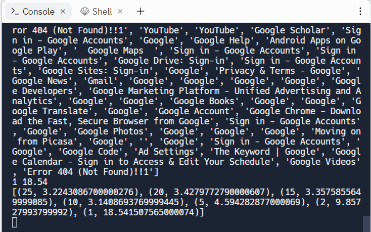
When the runs finish, the scatter plot will be shown in the Output window.
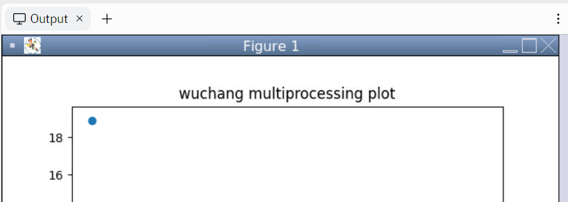
Non-blocking, event-driven programming is another method for speeding up execution. The benefit of this approach is that it can obtain the speedup that multiple processes achieve without the overhead of creating additional processes. The drawback, however, is that it is typically more difficult for beginners to write programs using this style.
In asynchronous programming, rather than wait for an operation such as retrieving a URL to finish, a program can issue the call and immediately continue execution, specifying a callback function to invoke upon notification of the call's completion. When all calls in a program are non-blocking, the program can be executed via a single process and event loop. This style of programming is common in web browsers executing Javascript programs. While there are several styles for supporting asynchronous programming, one common pattern used across multiple programming languages is the async/await primitive. Below is a diagram of what is happening:
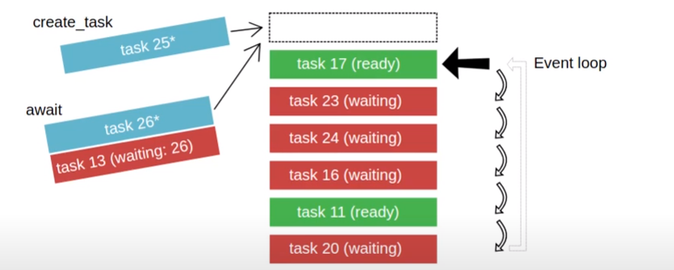
In the figure, a single event queue manages simultaneous tasks that are being executed by a single process. Some of the events in the queue are waiting (via await) for external events to occur as shown by the tasks in red. Our program can add tasks to the event queue directly, as shown in light blue. Finally, tasks that have had their external events fulfilled and are no longer waiting are shown in green and can be processed immediately.
The code below implements the retrieval of the set of URLs in an asynchronous manner. It uses httpx, a Python package supporting an asynchronous HTTP client, along with the asyncio package. We first create agetUrlTitle(), an asynchronous implementation of getUrlTitle() that issues a non-blocking call (specified via await) to retrieve the URL using an httpx client that it is passed. When executed, this call will yield control to other parts of the program. When client.get() finishes, the subsequent code in agetUrlTitle() is then invoked to parse out the title of the page retrieved.
import asyncio, httpx
async def agetUrlTitle(client, url):
"""
This asynchronous function returns the <title> of an HTML document given its URL
:param url: URL to retrieve
:type client: HTTPX client
:type url: str
:return: Title of URL
:rtype: str
"""
resp = await client.get(url, follow_redirects=True)
soup = BeautifulSoup(resp.text,'html.parser')
if soup.find('title'):
return(soup.find('title').text)
else:
return ('')The following code can then be used to instantiate the httpx client and to invoke the asynchronous function that uses it across the set of URLs. Note that each call to agetUrlTitle() returns a single string and that we wish to return a list of strings as the result. This is done via Python's list comprehension syntax as shown:
async def async_main(urls):
async with httpx.AsyncClient(timeout=60.0) as client:
titles = [ agetUrlTitle(client, u) for u in urls ]
results = await asyncio.gather(*titles)
return(results)Finally, we implement the synchronous call getAsync() to kick off the asynchronous function and to time its execution:
@time_decorator
def getAsync(urls):
"""
Given a list of URLs, retrieve the title for each one using a single synchronous process
:param urls: List of URLs to retrieve
:type urls: list of str
:return: list of str
"""
return(asyncio.run(async_main(urls)))With an asynchronous design, a program can issue an enormous number of requests in a short period of time. Unfortunately, this might overwhelm the underlying OS, the network, or the web servers the program is communicating with. An asynchronous program can be designed to limit the number of concurrent requests allowed, however, to ensure this doesn't happen. Towards this end, modify the multiprocessing version of the program as shown below to batch up the URLs based on the number of concurrent requests desired. The program synchronously issues batches of requests where each batch is retrieved asynchronously via the getAsync() call.
resp = httpx.get('https://thefengs.com/wuchang/courses/cs495/urls.txt')
urls = resp.text.strip().split('\n')
concurrencies = [25, 20, 15, 10, 5, 2, 1]
elapsed = []
for concurrency in concurrencies:
total_time = 0
for i in range(0,len(urls),concurrency):
fetch_time = getAsync(urls[i:i+concurrency])
total_time += fetch_time
elapsed.append(total_time)
print(f'Async version {concurrency}: {total_time:0.2f}')
print(list(zip(concurrencies, elapsed)))As with the multiprocessing version, we can plot the performance of our asynchronous version across multiple concurrencies using matplotlib. Modify the code below with your OdinId to graph the performance across multiple concurrency levels.
import matplotlib.pyplot as plt
plt.scatter(concurrencies, elapsed)
plt.title("Personalize title using your OdinId")
plt.xlabel("Number of Concurrent Requests")
plt.ylabel("Retrieval Time")
plt.show()Run the program on repl.it. In the console, see the results appear after a short time.
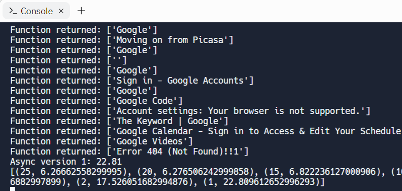
Then, examine the scatter plot in the Output window.
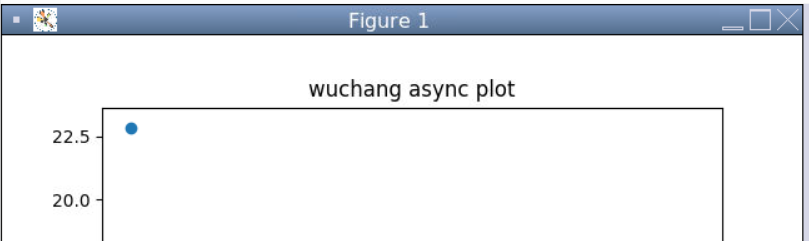